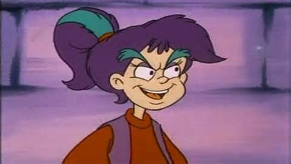
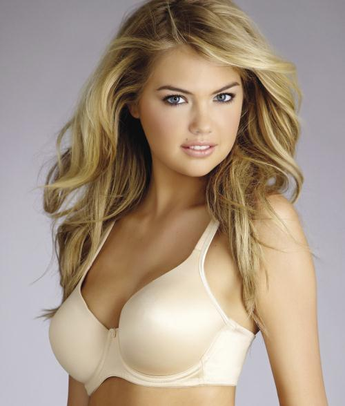
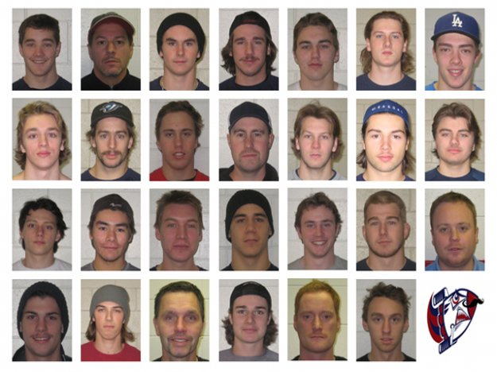

Genetic algorithms
Tomek Kwiecien
Mimicing nature
Genetic algorithms try to imitagte evolution on a very basic / naive level.
Type of problems
Genetic algorithms are used for optimization tasks. It means you already have solutions and a way to tell which ones are better.
Finding the best solution
- Brute force: generate all, pick best
- Genetic algorithms: change existing set of solutions until they evolve into the best one
Car problem
Create a car out of several parts.
- Brute force: a lot of solutions without wheels
- Genetic algorithms: we evolve only the best solutions, the rest die out
Structure
- feature
- individuals / solutions
- population
- generation
Operations
- fitness
- selection
- reproduction
- crossover
- mutation
Diversity
Fitness is not all you need for avoiding local maximum. You want both, fit and diverse individuals.
Gen-inder
Grow the best individual for a client.
Gosia
Gosia v2
Tofik
Process
- We present the current population to Gosia
- Gosia ranks the individuals
- We generate new population based on Gosia's ranking
- Repeast until we have a perfect fit
Gosia returns